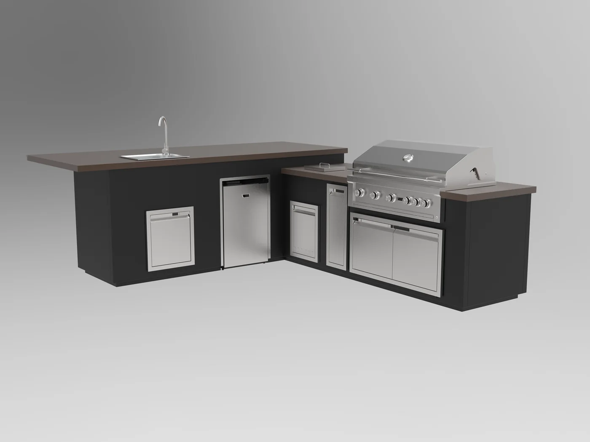
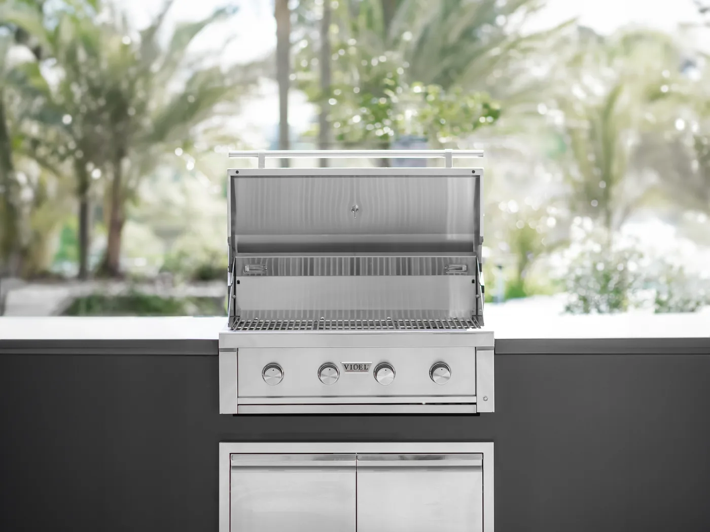

Complete outdoor kitchens planned as one run — and every piece that goes in one, from the built-in BBQ and the island to refrigeration, sinks and countertops. Buy the whole kitchen or a single component. On display at our Huntington Beach showroom, supported across Southern California.
An outdoor kitchen is a set of components that have to fit one island, one counter height and one set of utility runs. We help you choose them together, so the openings, finishes and spacing all line up before anything is built. Our BBQs, grills and outdoor kitchen components come from Videl, the cooking line we carry.
Not planning a whole kitchen? Every category below can be bought on its own — a built-in grill to replace a worn one, a refrigerator or drawer stack for a run you already have, a countertop for an existing island. Tell us what is already there and we will match the cut-out, the finish and the gas type before you order.
Straight, L-shaped and U-shaped runs planned around your cooking workflow, not a catalog page.
Explore Kitchens →Gas grills sized by burner count and cooking area, with the opening size and safe spacing your installer needs.
Shop Built-In Grills →Modular or custom islands with storage, doors and drawers below and a work surface either side of the grill.
See BBQ Islands →Outdoor-rated refrigerators, beverage centers, ice makers and kegerators that keep the cook outside.
Shop Refrigeration →Bar sinks, prep sinks, drawer stacks, trash pull-outs and access doors in matching stainless finishes.
Browse Components →Side and power burners, built-in smokers and kamados, plus ventilation hoods where a run sits under a roof.
View Appliances →UV-stable counter surfaces and the stone, tile and veneer that wrap the island — selected alongside it.
Browse Stone & Tile →A built-in or countertop pizza oven planned in from the start, with the space it needs around it already allowed for.
See Pizza Ovens →Tell us how you cook and roughly what your space looks like. We'll come back with a layout, an appliance list and a figure to plan against.
Request My Free Quote →We are an outdoor living design center in Huntington Beach. Homeowners come to us to see premium products in person, get straight help choosing between them, and leave with a kitchen that is properly planned — sizes, finishes and safe spacing all worked out before anything is built.
Outdoor kitchens, stone and tile, fire features and shade structures sit under one roof in Huntington Beach — so the whole backyard can be planned together rather than ordered piece by piece from separate suppliers.
Showroom displays are available for viewing, so you can judge the things a spec sheet cannot tell you: how a grill lid is built, how a drawer runs, how tall the counter really feels, and what a stone color looks like in daylight rather than on a screen.
We start by asking how you cook and how you entertain, then work outward. That often means talking you out of a side burner you would rarely light — a shorter list you use tends to beat a fuller one you don't.
We work directly with leading outdoor kitchen and appliance manufacturers, so we can share current cut sheets, realistic lead times and clear answers on warranty support.
Some of the brands we work with


The problem with a barbecue on a patio is not the barbecue. It is that everything else — plates, drinks, prep, the bin — is still inside, so the cook spends the evening walking back and forth through a sliding door while the party happens without them.
A backyard kitchen moves the surrounding work outdoors, not just the flame: counter space either side of the grill, cold storage within reach, a sink if you prep outside, and somewhere for people to sit while you cook. In a climate where Southern California backyards are usable most of the year, that is often the difference between a grill you use on weekends and a room you use every week.
Design the workflow first and the appliance list follows. Pick the appliances first and you end up with a beautiful run that is awkward to cook in.
A complete outdoor kitchen is a layout before it is a shopping list. The straight run is the simplest and suits a wall or a fence line. An L-shape separates cooking from prep and serving, which is what most people actually want once they think about where guests stand. A U-shape or an island with a bar overhang turns the kitchen into the place people gather rather than a station the cook works at alone.
Once the shape is settled, the appliances, the counter material and the utility runs all fall out of it — and the island can be framed to the right dimensions the first time.

The grill decides how big the island has to be, the size of the opening it drops into, the gas line it needs and how much space must be left around it. That is why it is worth choosing early — swap the grill late and the island gets rebuilt.
The same applies in reverse if the island already exists. Replacing a built-in BBQ on its own is routine, provided the new grill matches the opening you have: send us the cut-out width, depth and height and the gas type, and we will tell you what drops straight in and what would need the island altered.
Size is decided by how many people you cook for at once rather than by how much room is available; burner count and cooking area matter more than overall width. Beyond the main grill, the same run can carry side burners for sauces and sides, a power burner for a wok or a stockpot, a smoker or kamado, and a rotisserie — each with its own cut-out and gas requirement.

Start with the components above, or browse the full collection online. You do not need to know what you want yet — knowing roughly how many people you cook for, and whether the run sits in the open or under a roof, is enough to begin.
Browse Components →Send a couple of photos of the space and tell us how you entertain. We come back — usually within one business day — with a layout, an appliance list matched to it, and a real figure to plan against. No obligation, and no charge for the consultation.
Request My Free Quote →Come to Huntington Beach and see the pieces in person before you commit to them. We confirm the finishes, settle the countertop, and hand your installer the exact measurements and gas, water and power details they need — then deliver on your build schedule.
Plan Your Visit →For most people this is the only outdoor kitchen they will ever build — which is reason enough to plan it alongside someone who has worked on a lot of them.
Five decisions shape how an outdoor kitchen works and what it costs. Here is what each choice is actually good for, in plain English — all of it cheaper to settle on paper than in concrete.
Decide where the cook stands before anything else.
Whatever the shape, leave counter space on both sides of the grill. Not doing so is the most common regret we hear.
Pick the grill first — its size sets the island, so changing it later means rebuilding. Then add only what you will use.
Outdoors the rules change: sun fades color and salt air is hard on surfaces.
Near the coast? Tell us — salt air narrows the list.
Run the services before the paving goes down — it is far cheaper than cutting it up later.
At minimum: a built-in grill, a work surface either side of it, storage below and a way to get gas to it. Most complete kitchens add a sink with hot and cold water, a refrigerator, storage drawers and a bar or counter overhang for seating. From there it depends on how you cook — side burners, a pizza oven, a smoker or a kamado, a beverage center, an ice maker, or a ventilation hood if the run sits under a solid roof.
It ranges widely, because an outdoor kitchen is a construction project rather than a single purchase. The variables are the length of the run, the appliances going into it, the countertop material, the veneer on the island, and the gas, water, electrical and drainage work behind it. A compact BBQ island with a grill and storage sits at one end; a long L-shaped kitchen with a full appliance suite and a stone counter sits well above it. Tell us roughly what you want to cook on and we can give you a realistic figure to plan against.
Modular islands are built in a factory and assembled at your home — faster to install, easier to price, and a good fit if your patio is a normal shape. A custom-built kitchen is framed and faced on site, so it can follow an angled patio, wrap a corner, match an unusual height, or carry the same stone as the rest of your yard. Budget, timeline and how irregular your space is usually decide it.
Granite is the safe all-rounder, porcelain suits a modern look and wipes clean, and quartzite gives you marble looks that survive the sun. Avoid the quartz used on indoor counters — sunlight fades it. There is a fuller breakdown in How to Plan an Outdoor Kitchen above, and if you are near the coast tell us, because salt air narrows the list.
It depends on what is above it. A grill in the open air needs nothing. A grill under a solid roof or a covered patio needs an extractor hood above it, sized to the grill, because the smoke and heat have nowhere else to go. That is a safety requirement rather than a styling choice, and it has to be decided before the island is built — adding one afterwards usually means taking the roof or the island apart.
Usually. The work is in the utilities rather than the island: gas to the grill, water and drainage if there is a sink, and power for a refrigerator, lighting or ignition. If your patio is already paved, that usually means digging a trench and patching it afterwards, which your contractor can assess on site. Where the utility runs are impractical, a shorter island with a propane grill and no plumbing gets much of the way there.
From the Huntington Beach showroom we supply and support outdoor kitchens, BBQ islands and built-in appliances throughout Orange County — for homeowners building one backyard and for contractors building many.
Building elsewhere in Orange County, or just over the line in Los Angeles, Riverside or San Diego county? Ask us — we ship and deliver beyond this list.
Grill build quality, drawer action, counter height and the true color of a stone surface are hard to judge from a spec sheet. Showroom displays are available for viewing at our Huntington Beach location, so you can compare appliances and finishes in person and talk them through with our team. It is a good way to see how these kitchens come together, piece by piece.
Homeowners are most of who we see. Trade partners are who we see again next month — and the support is built for that.
A compact BBQ island or a full outdoor kitchen with the appliance suite — send us the space and how you cook, and we'll come back with a layout, an appliance list and a figure to plan against. Free, and no obligation.
Tell us about your space and how you cook, and our team will follow up with a layout, appliance options and pricing.